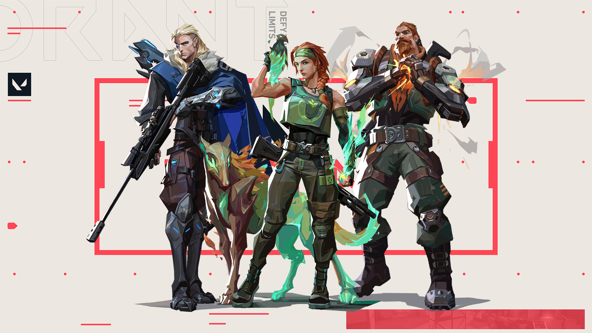
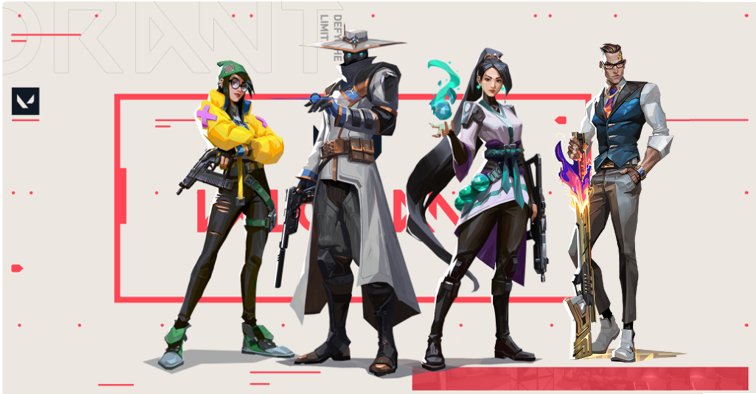
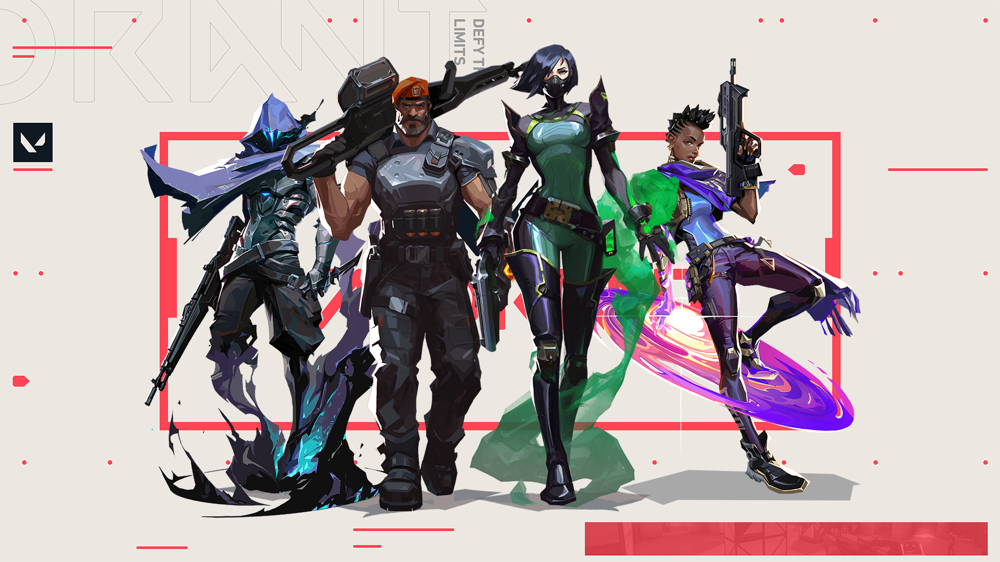
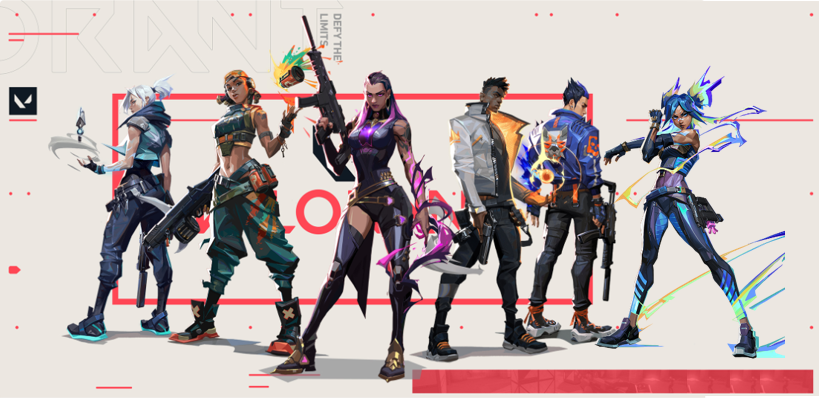

Classes de Agentes
Iniciadores
Os Agentes Iniciadores de Valorant são especialistas em desafiar a defesa dos adversários, criando oportunidades para os aliados se posicionarem melhor na área atacada. É recomendado que eles tomem as primeiras ações durante as rodadas, utilizando suas habilidades para colocar os inimigos em desvantagem enquanto aguardam o suporte dos aliados, dando seguimento ao combate.
Nessa classe, há certa predominância de habilidades táticas voltadas para ações de desarme, tais como cegar inimigos, garantir reconhecimento da área ou causar um pequeno dano a fim de expulsar o time adversário de possíveis pontos de vantagem. Seu principal destaque é a possibilidade de executar essas estratégias sem precisar entrar, necessariamente, na linha de tiro. Há três agentes Inicializadores em Valorant: Sova, Skye e Breach.
Sentinelas
Especialistas em defesa, os Agentes Sentinelas são capazes de proteger e monitorar grandes áreas dos mapas a fim de garantir segurança para a conclusão de objetivos. Com poucas habilidades de locomoção, é recomendado que eles se posicionem de maneira cautelosa durante os combates, trabalhando a retaguarda para evitar flancos inimigos. Atualmente, a classe conta com quatro personagens: Cypher, Sage, Killjoy e Chamber (adicionado recentemente).
Controladores
Dedicados à eliminação de pontos de vantagem do time adversário, os Agentes Controladores abrem alas para uma entrada segura na região inimiga em rodadas de ataque. Em contrapartida, na defesa, podem desencorajar os avanços inimigos com granadas, bombas de fumaça e ataques poderosos. Sua principal vantagem é justamente a capacidade de "cortar" o mapa em zonas de segurança para o desenvolvimento de estratégias aliadas. Valorant atualmente conta com quatro Agentes Controladores: Brimstone, Omen, Viper e Astra.
Duelistas
Combatentes natos, os Agentes Duelistas pertencem à linha de frente do combate. Tendo o maior número de habilidades ofensivas, essa classe se destaca por sua capacidade de locomoção rápida e letal, além de contar com o maior número de personagens: Jett, Raze, Reyna, Yoru, Phoenix e Neon (adicionada recentemente).
Os Duelistas são mais bem aproveitados por jogadores mais ousados, com reflexos rápidos e capacidade de tomar decisões rápidas. Isso se dá justamente pelo posicionamento avançado nas zonas de combate, o que deixa os Agentes expostos ao perigo. Combinando com um bom trabalho de equipe e suporte, é possível alcançar estratégias efetivas de combate e, por fim, a vitória.
